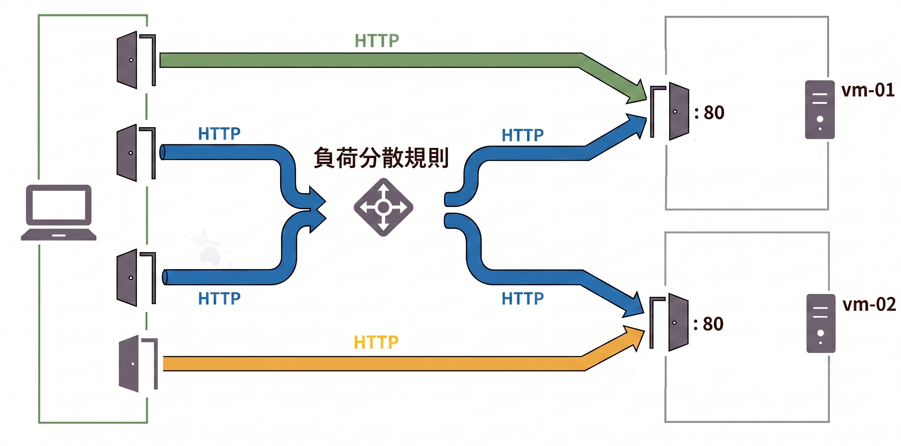
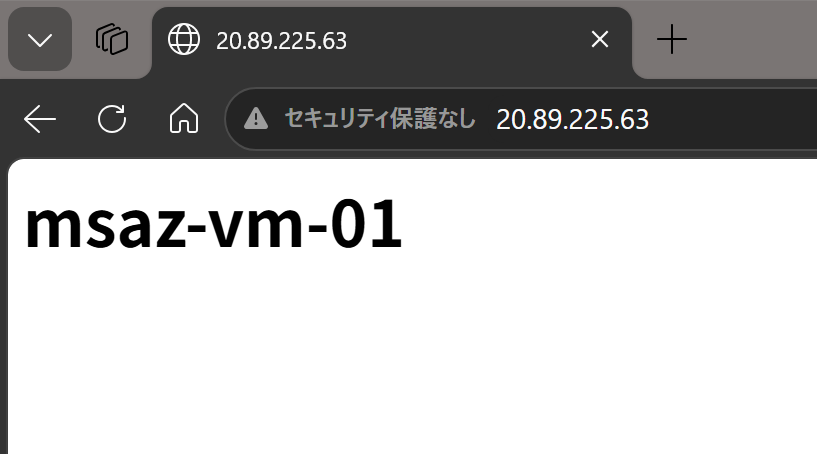
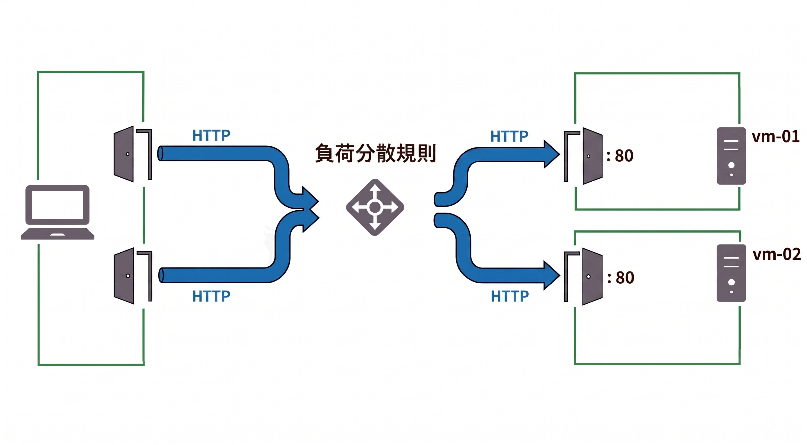
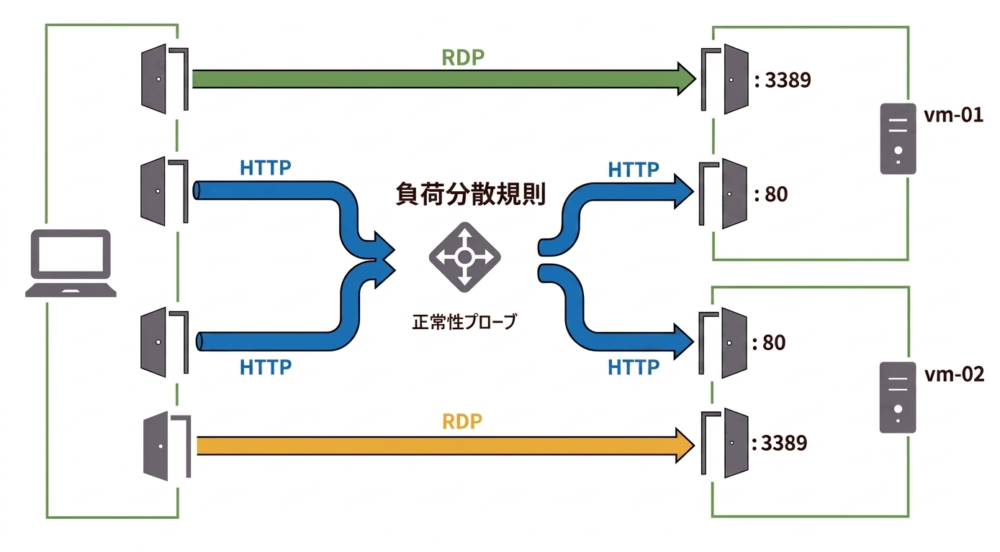

Azure ポータルで パブリックロードバランサーをテストする
適用対象: ✔️ ロードバランサー
この演習では、Azure ポータルを使用して パブリックロードバランサーをテストします。
所要時間: 約 30 分
先行の演習
この演習を始める前に 仮想マシンに IISをインストールする を完了してください。
タスク 1: 仮想マシン(IIS)のテスト
仮想マシンの IIS が 期待通りのHTMLファイルを配信するか確認します。
ロードバランサーのフロントエンドに HTTP接続すると どの仮想マシンに振り分けられるか分かりません。そのためここでは、
ロードバランサーを経由せず、仮想マシンに直接 HTTP接続して確認します。

バックエンドの仮想マシンに直接アクセスする経路は、一般的に本番環境では許可されませんが、ここでは確認のために使用します。- 上部の検索ボックスに
パブリック IP アドレスと入力します。 - [パブリック IP アドレス] を選択します。
- ポータルの画面から
msaz-vm-01-ipの IP アドレス をコピーします。
- ブラウザで新しいタブを開いてコピーしたURLをアドレスバーに貼り付けます
（ロードバランサーを経由しない経路＝図のグリーンの経路）。 msaz-vm-01が表示されることを確認します。
msaz-vm-01にアクセスしてmsaz-vm-01が表示されることの確認です。
表示されない場合は HTTPで接続していることを確認してください（HTTPSでは接続できません）。- ポータルの画面から
msaz-vm-02-ipの IP アドレス をコピーします。 - ブラウザで新しいタブを開いてコピーしたURLをアドレスバーに貼り付けます
（ロードバランサーを経由しない経路＝図のオレンジの経路）。 msaz-vm-02が表示されることを確認します。
msaz-vm-02にアクセスしてmsaz-vm-02が表示されることの確認です。
表示されない場合は HTTPで接続していることを確認してください（HTTPSでは接続できません）。
タスク 2: ロードバランサー(負荷分散規則)のテスト
ロードバランサーの負荷分散規則が機能することを確認します。
接続元ポートが変化すれば 振り分け先サーバーが変化する場合があることを確認します。

| 宛先アドレス | 宛先ポート | 適用される規則 | 振り分け方式 | 転送先アドレス | 転送先ポート | サービス |
|---|---|---|---|---|---|---|
| フロントエンド ロードバランサー |
80 | 負荷分散規則 | 5タプルハッシュ （セッション永続化：なし） |
バックエンド 仮想マシン |
80 | HTTP |
| 仮想マシン | 80 | なし | なし | なし | なし | HTTP |
- 上部の検索ボックスに
パブリック IP アドレスと入力します。 - [パブリック IP アドレス] を選択します。
- ポータルの画面から
msaz-lb-ipの IP アドレス をコピーします。 - ブラウザで新しいタブを開いてコピーしたURLをアドレスバーに貼り付けます
（ロードバランサーを経由する経路＝図のブルーの経路）。 msaz-vm-??が表示されることを確認します（01 または 02）。
msaz-lbにアクセスしてmsaz-vm-01またはmsaz-vm-02が表示されることの確認です。
表示されない場合は HTTPで接続していることを確認してください（HTTPSでは接続できません）。- コピーした同じURLを 下記のいずれかの方法で開いたタブの アドレスバーに貼り付けます
（ロードバランサーを経由する経路＝図のブルーの経路）。
接続元ポートが変化することで 5タプルハッシュ(の剰余)が変化することを期待します。 - 現在のブラウザとは別の種類のブラウザで新しいタブを開く（EdgeならChromeなど）。
- 新しいタブを開いて数分(4分)程度 なにも操作せずに放置する。
- Privateウィンドウ や シークレットウィンドウ を開いて新しいタブを開く。
msaz-vm-??が表示されることを確認します（01 または 02）。
msaz-lbにアクセスしてmsaz-vm-01またはmsaz-vm-02が表示されることの確認です。- コピーした同じURLで
msaz-vm-??が変化するまで いくつかの方法を試します。
5タプルハッシュ(の剰余)が変化することで 通信の振り分け先が変化する場合があることの確認です。
タスク 3: ロードバランサー(正常性プローブ)のテスト
ロードバランサーの正常性プローブが機能することを確認します。
Webページを配信するサーバーに問題が発生した場合、ロードバランサーが振り分け先を変更して
配信が継続されます（フェイルオーバー）。
| 順序 | 操作内容 | vm-01 (IIS) | vm-02 (IIS) | LB の振り分け先 |
|---|---|---|---|---|
| 1 | 初期状態 | Running | Running | vm-01 または vm-02 |
| 2 | vm-01 の IIS を停止 |
Stopped | Running | vm-02 |
| 3 | vm-01 の IIS を開始 |
Running | Running | vm-01 または vm-02 |
| 4 | vm-02 の IIS を停止 |
Running | Stopped | vm-01 |
ロードバランサーではなく仮想マシンのIPアドレスに RDP接続して確認します。

バックエンドの仮想マシンに直接アクセスする経路は、一般的に本番環境では許可されませんが、ここでは確認のために使用します。| 宛先アドレス | 宛先ポート | 適用される規則 | 振り分け方式 | 転送先アドレス | 転送先ポート | サービス |
|---|---|---|---|---|---|---|
| フロントエンド ロードバランサー |
80 | 負荷分散規則 | 5タプルハッシュ （セッション永続化：なし） |
バックエンド 仮想マシン |
80 | HTTP |
| 仮想マシン | 3389 | なし | なし | なし | なし | RDP |
- 上部の検索ボックスに
パブリック IP アドレスと入力します。 - [パブリック IP アドレス] を選択します。
- ポータルの画面から
msaz-vm-01-ipの IP アドレス をコピーします。 コピーした IP アドレス:3389 で リモートデスクトップ接続します。
（ロードバランサーを経由しない経路＝図のグリーンの経路）- リモートデスクトップ接続で仮想マシンのデスクトップが表示されていることを確認します。
- スタートメニューを選択して [Windows PowerShell] を選択します。
- IISを停止するコマンドを実行します。
Stop-Service W3SVC
- IIS サービスを状態確認するコマンドを実行します。
Get-Service W3SVC
- PowerShellプロンプトで Status が Stopped であることを確認します。
- ポータルの画面から
msaz-lb-ipの IP アドレス をコピーします。 - ブラウザで新しいタブを開いてコピーしたURLをアドレスバーに貼り付けます
（ロードバランサーを経由する経路＝図のブルーの経路）。 msaz-vm-02が表示されることを確認します。
msaz-vm-01が停止していたら、msaz-vm-02に振り分けられることの確認です。- ポータルの画面から
msaz-vm-01-ipの IP アドレス をコピーします。 コピーした IP アドレス:3389 で リモートデスクトップ接続します。
（ロードバランサーを経由しない経路＝図のグリーンの経路）- リモートデスクトップ接続で仮想マシンのデスクトップが表示されていることを確認します。
- スタートメニューを選択して [Windows PowerShell] を選択します。
- IISを開始するコマンドを実行します。
Start-Service W3SVC
- IIS サービスを状態確認するコマンドを実行します。
Get-Service W3SVC
- PowerShellプロンプトで Status が Running であることを確認します。
- ポータルの画面から
msaz-vm-02-ipの IP アドレス をコピーします。 コピーした IP アドレス:3389 で リモートデスクトップ接続します。
（ロードバランサーを経由しない経路＝図のオレンジの経路）- リモートデスクトップ接続で仮想マシンのデスクトップが表示されていることを確認します。
- スタートメニューを選択して [Windows PowerShell] を選択します。
- IISを停止するコマンドを実行します。
Stop-Service W3SVC
- IIS サービスを状態確認するコマンドを実行します。
Get-Service W3SVC
- PowerShellプロンプトで Status が Stopped であることを確認します。
- ポータルの画面から
msaz-lb-ipの IP アドレス をコピーします。 - ブラウザで新しいタブを開いてコピーしたURLをアドレスバーに貼り付けます
（ロードバランサーを経由する経路＝図のブルーの経路）。 msaz-vm-01が表示されることを確認します。
msaz-vm-02が停止していたら、msaz-vm-01に振り分けられることの確認です。
| 順序 | 操作内容 | vm-01 (IIS) | vm-02 (IIS) | LB の振り分け先 |
|---|---|---|---|---|
| 2 | vm-01 の IIS を停止 |
Stopped | Running | vm-02 |
| 順序 | 操作内容 | vm-01 (IIS) | vm-02 (IIS) | LB の振り分け先 |
|---|---|---|---|---|
| 4 | vm-02 の IIS を停止 |
Running | Stopped | vm-01 |